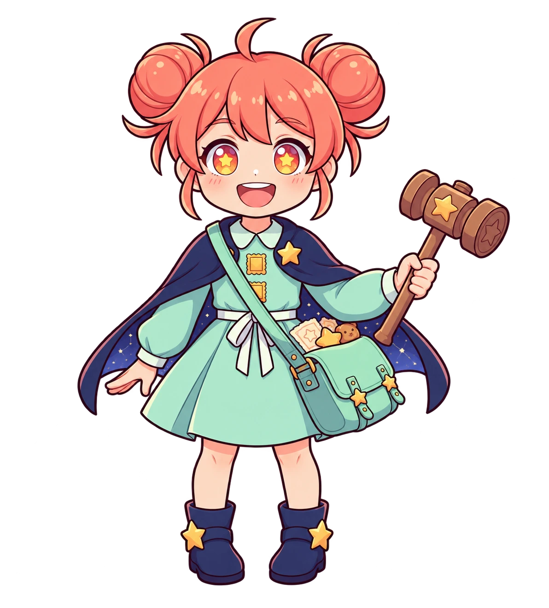
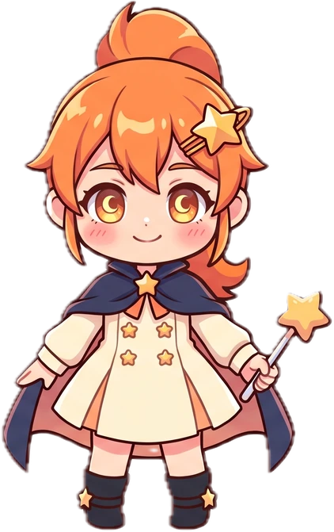
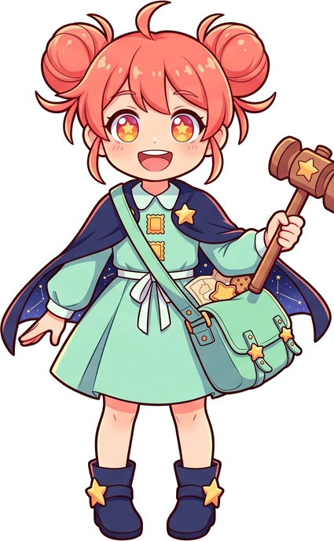

잠의 항구에 별빛을 켜고 있어요.
OUR DREAMY NIGHTS
잊힌 꿈을 깨우는 작은 순찰.나만의 지킴이로 오늘 밤의 빛을 되찾아주세요.
키보드와 터치로 플레이 · 자동 저장



먼지를 털어낸 자리에는,처음의 마음이 남아 있었어요.
오늘도 등대를 못 찾았다.등대지기가 등대를 잃어버리다니.
길을 조금 헤맸지만,우리가 지켜낸 꿈은 반짝였다.
여러분이 전한 마음이 항구에 남았어요. 다음 꿈길은 몽글 오븐 마을입니다.